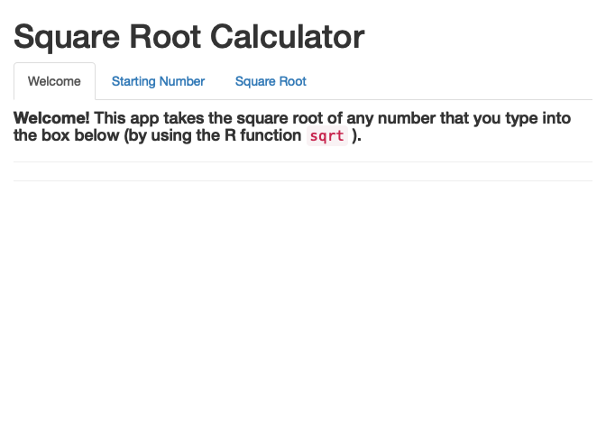

# install.packages("librarian")
librarian::shelf(shiny, htmltools)Layouts
App Layout Options
R Shiny apps come with several pre-built layouts stored as functions. As with labels and headers, layouts are exlcusively controlled in the UI. This makes choosing a layout a similar process to the labels and headers selection process so hopefully the examples below will feel familiar!
As before, we need to re-define our UI, server, and app.We will also need to make sure that both shiny and htmltools are loaded as our app now depends on both.
Once we have the packages that we need, re-create the UI we wound up with at the end of the “Labels and Headers” chapter.
# Define the UI
default_ui <- fluidPage(
# Add a top-level header
htmltools::h1("Square Root Calculator"),
# Add an app explanation as a small(ish) header
htmltools::h4(
htmltools::strong("Welcome!"),
"This app takes the square root of any number that you type into the box below (by using the R function ",
htmltools::code("sqrt"), ")." ),
# Add two line breaks
htmltools::hr(),
htmltools::hr(),
# Now add a smaller header for the input
htmltools::h3("Enter a Number Below"),
# Create the radio buttons
numericInput(inputId = "my_input",
label = "Type a number",
value = 25),
# Add a line break
htmltools::hr(),
# Also include a smaller header for the output
htmltools::h3("See Answer Below"),
# And print the output
"Square root is: ",
textOutput(outputId = "my_output")
)Build the server again.
# Define the server
layout_server <- function(input, output){
# Let's take the numeric input and take the square root
output$my_output <- renderText( sqrt(input$my_input) )
}Finally, create the app!
shinyApp(ui = default_ui, server = layout_server)
The layout we have used so far is the default for Shiny: a single fluid page where all content is stacked vertically (that’s what the fluidPage function in the first line of the UI defaults to). However, if desired, we can invoke one of shiny’s built-in functions for specifying different app layouts. Let’s experiment with (1) an app that has a sidebar versus a main panel and (2) an app where content is divided into tabs.
Layout - Tabs
Another viable layout is to place content in separate tabs that a user can navigate between. This is similar to the navbar of this website as all tab labels will be visible but only the content of the selected tab will be displayed.
Note that because this is a layout change, the server function is still capable of using inputs from one or more tabs and creating outputs in other tabs entirely if desired. In our experience, multiple tabs are more frequently used to display separate datasets that are under a common umbrella (e.g., the data from several experiments conducted at the same site, etc.).
In order to use the tabs layout we need two new shiny functions: tabsetPanel and one use of tabPanel per tab you’d like in your app. See below for an example
# Define the UI
tab_ui <- fluidPage(
# Add a top-level header
htmltools::h1("Square Root Calculator"),
# Let's start the tabs here
tabsetPanel(
# Now we need to tell the app where each tab starts and stops
tabPanel(title = "Welcome",
# Add an app explanation as a small(ish) header
htmltools::h4(
htmltools::strong("Welcome!"),
"This app takes the square root of any number that you type into the box below (by using the R function ",
htmltools::code("sqrt"), ")." ),
# Add two line breaks
htmltools::hr(),
htmltools::hr(),
# Close this tabPanel and start the next
), tabPanel(title = "Starting Number",
# Now add a smaller header for the input
htmltools::h3("Enter a Number Below"),
# Create the radio buttons
numericInput(inputId = "my_input",
label = "Type a number",
value = 25),
# Add a line break
htmltools::hr(),
# Close this tabPanel and start the next
), tabPanel(title = "Square Root",
# Also include a smaller header for the output
htmltools::h3("See Answer Below"),
# And print the output
"Square root is: ",
textOutput(outputId = "my_output")
# Close the current tab panel
)
# Now close the `tabsetPanel(...` parentheses
)
# Then close the whole `fluidPage` parentheses
)Note that the title argument defined in each tabPanel call becomes the words on the tab.
Once the layout has been defined in the UI, we can create another app using the tab layout but with the same server function as the other two apps.
shinyApp(ui = tab_ui, server = layout_server)
An advantage of using tabPanels is that you can have essentially as many tabs as you desire. This allows for an app with a huge amount of data that users can still easily navigate.